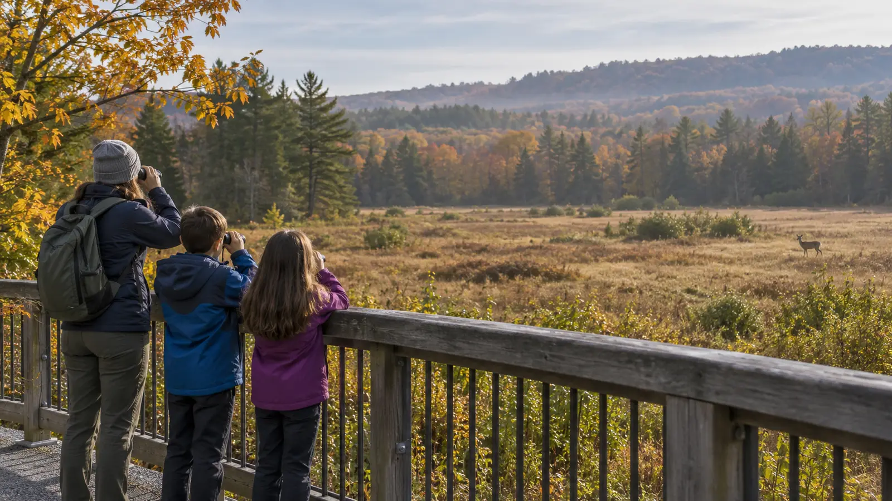

Distant and unaware
Do: stop, group up, stay on the route and watch through binoculars. Keep voices low and the viewing brief.
Do not: close the gap, call the animal, leave the trail or block other visitors.
WILDLIFE · DISTANCE IS THE ACTIVITY
The sighting is not an invitation. Stop the family, get children beside an adult, give the animal room and let a distant look be the whole win.

The National Park Service notes that many parks require at least 25 yards from most wildlife and 100 yards from predators such as bears and wolves, but it immediately warns that distances vary by park. Those numbers are examples, not permission to approach an animal until a tape measure says stop. The controlling rule is the location's current requirement. If the animal changes behavior because of you, you are already too close.
Species, young animals, food, pets, traffic and terrain all change the encounter. This guide provides the family's first response while adults retrieve the official rule. It does not replace bear guidance, a ranger's direction, hunting-season notices, a closure or emergency instructions.
Practice the words at home and again at the trailhead. The script should be shorter than a child's excitement. Pair it with the family separation plan: children do not chase an animal, leave the group for a better view or run toward the last place they saw it.
Read the destination's official wildlife, food-storage and pet pages. Look for seasonal warnings, nesting closures, bear activity, hunting seasons, disease notices and rules about viewing platforms. Save the relevant phone number. A national rule cannot replace a site-specific closure, and a summer answer may be wrong during migration, nesting or food-conditioning activity.
For New York destinations, check the managing agency: New York State Parks, the Department of Environmental Conservation, National Park Service, U.S. Fish and Wildlife Service, county park or private preserve. If the site does not publish what to do for the species a family may encounter, ask staff before entering a remote route.
Give one child the binoculars, one child the map and one adult the decision. The children may describe color, movement and habitat from the group's position. Nobody gets the role of moving closer. The family binoculars guide explains why a steadier view is more useful than more magnification.
Do not tell a frightened child that the animal is harmless. Wild animals can be unpredictable, and false reassurance teaches the wrong lesson. Say what the family is doing: “We are together. We are giving it room. We are taking the other path.” Calm, concrete actions are more useful than certainty theater.
Wildlife does not need to be visible for food rules to matter. Use required wildlife-resistant storage, close trash containers and clear every crumb from picnic tables. Never feed an animal to make it hold still. The National Park Service warns that food-conditioned wildlife can become aggressive and may ultimately be removed or killed by managers.
Keep snacks inside the adult-controlled bag until the family is at a permitted eating location. If an animal enters the picnic area, stop eating, secure food without approaching the animal and follow staff instructions. Do not abandon an open sandwich to become the next family's problem. The cooler guide should be paired with the site's exact food-storage rules.
First verify that dogs are allowed on the exact route. Where permitted, keep the dog on the required leash and under physical control; clean up waste. A leash is not enough if the dog lunges, barks continuously or pulls the family toward wildlife. Turn around. Do not attach the leash to a child, use a retractable line at a viewing area or let a dog investigate tracks, nests, carcasses or droppings.
If the site advises leaving pets at home, that is the plan. The family's desire to include the dog does not outrank wildlife protection or the dog's safety.
Wildlife beside a road creates two hazards: the animal and moving traffic. Reduce speed smoothly when safe, obey signs and expect more animals to follow. Do not stop in a travel lane. Use only a designated pullout where the whole vehicle can clear traffic, and keep children inside unless the site explicitly provides a safe viewing area.
Never open a door toward traffic or allow a child to cross for a photograph. The roadside safety plan applies even when the car works: traffic exposure comes before the interesting thing outside.
Do not touch, carry, feed or bring home a wild animal. A young animal alone is not proof it has been abandoned; the parent may be nearby. Observe only from distance and contact the managing agency or a licensed wildlife rehabilitator through the official route. Do not crowd an injured animal or post a live location that invites more people.
If a person is bitten, scratched or has direct saliva exposure, move to safety and follow current public-health guidance. The Centers for Disease Control and Prevention advises washing bite or scratch wounds with soap and water and promptly seeking medical care for a rabies risk assessment. Call emergency services for severe injury. Do not capture the animal unless authorities specifically direct trained personnel to do so.
Do not reduce bear safety to “make noise” or “play dead.” The National Park Service says strategies vary with the situation and species, and parks may have local instructions. Check the current bear page for the destination before entering bear habitat. If a bear notices the family, keep children close, do not run, do not surrender food and follow the exact local guidance. Report encounters to park staff.
Bear spray is not a casual family accessory. Where it is recommended and lawful, adults need an EPA-registered product designed for bears, site permission, accessible carry and training from authoritative instructions. It is not human pepper spray, animal repellent to apply on gear or a substitute for distance and food control.
Wildlife does not appear: let tracks, plants and habitat be the activity; never bait a sighting. Viewing area is crowded: leave instead of joining a ring around the animal. Child is frightened: increase distance and end the viewing. Rain or darkness reduces visibility: return by the known route before navigation becomes the bigger risk. Animal blocks the route: wait from a safe place, use the official detour or turn around; the itinerary does not have right of way.
Skip a wildlife-focused route when a child cannot stop on command, a dog cannot remain controlled, the family is unwilling to leave without a sighting, or the only available route lacks the distance or barriers required by current guidance. Choose a staffed nature center or the visitor center at Montezuma National Wildlife Refuge when a vehicle-based or structured observation plan is the better fit.
MAKE THE WEEKEND COUNT
Build the day your family can finish well, then leave enough energy for the ride home.
More family plans